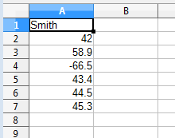
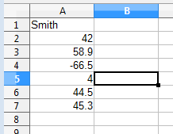

Chapter 25. Monitoring Sheets
Topics
Listening for Document Modifications (XModifyListener); Listening for Application Closing (XTopWindowListener); Listening for Cell Selection (XSelectionChangeListe ner)
Example folders: "Calc Tests" and "Utils"
The chapter looks at three kinds of listeners for spreadsheets: document modification, application closing, and cell selection listeners.
Office's support for listeners was first described back in Chapter 4.
1. Listening for the User's Modifications
A common requirement for spreadsheet programming is controlling how the user interacts with the sheet's data. In the extreme case, this might mean preventing the user from changing anything, which is possible through the XProtectable interface discussed in Chapter 20, section 1.1. But often we want to let the user edit the sheet, but monitor what is being changed.
One way of doing this is to attach a XModifyListener interface to the open document so that its modified() method will be triggered whenever a cell is changed.
ModifyListener.java illustrates this approach:
// in ModifyListener.java public class ModifyListener implements XModifyListener { private XSpreadsheetDocument doc; private XSpreadsheet sheet;
public ModifyListener() { XComponentLoader loader = Lo.loadOffice(); doc = Calc.createDoc(loader); if (doc == null) { System.out.println("Document creation failed"); Lo.closeOffice(); return; } GUI.setVisible(doc, true); sheet = Calc.getSheet(doc, 0);
// insert some data
Calc.setCol(sheet, "A1",
new Object[] {"Smith", 42, 58.9, -66.5, 43.4, 44.5, 45.3});
// listen for cell modifications
XModifyBroadcaster mb = Lo.qi(XModifyBroadcaster.class, doc);
mb.addModifyListener(this);
// close down when window close box is clicked
XExtendedToolkit tk = Lo.createInstanceMCF(
XExtendedToolkit.class,
"com.sun.star.awt.Toolkit");
if (tk != null)
tk.addTopWindowListener( new XTopWindowAdapter() {
public void windowClosing(EventObject eo)
{ System.out.println("Closing");
Lo.saveDoc(doc, "modify.ods");
Lo.closeDoc(doc);
Lo.closeOffice();
}
});
} // end of ModifyListener()
// ----- XModifyListener methods ------
public void disposing(EventObject event) { System.out.println("Disposing"); }
public void modified(EventObject event)
{ // called whenever a cell is modified;
// the code in this method is explained below
}
// ------------------------------------ public static void main(String args[]) { new ModifyListener(); }
} // end of ModifyListener class
1.1. Listening to the Close Box
main() creates a ModifyListener object and then terminates, which means that the object must deal with the closing of the spreadsheet and the termination of Office.
This is done by employing another listener: an adapter for XTopWindowListener, called XTopWindowAdapter, attached to the Calc application's close box:
- // in ModifyListener.java
- XExtendedToolkit tk = Lo.createInstanceMCF(XExtendedToolkit.class,
"com.sun.star.awt.Toolkit"); if (tk != null) tk.addTopWindowListener( new XTopWindowAdapter() { public void windowClosing(EventObject eo) { / called whenever the appl. is closed / } }
XTopWindowListener was described in Chapter 4, section 1, but XTopWindowAdapter is one of my support classes.
XTopWindowListener defines eight methods, called when the application window is in different states: opened, activated, deactivated, minimized, normalized, closing, closed, and disposed. XTopWindowAdapter supplies empty implementations for those methods:
// in Utils/XTopWindowAdapter.java public class XTopWindowAdapter implements XTopWindowListener { public XTopWindowAdapter(){}
public void windowOpened(EventObject event){}
public void windowActivated(EventObject event){} public void windowDeactivated(EventObject event){}
public void windowMinimized(EventObject event) {} public void windowNormalized(EventObject event){}
public void windowClosing(EventObject event){} public void windowClosed(EventObject event){}
public void disposing(EventObject event){} } // end of XTopWindowAdapter class
ModifyListener.java overides XTopWindowAdapter's windowClosing(), but leaves the other methods unchanged. windowClosing() is triggered when the application's close box is clicked, and it responds by saving the document, then closes it and Office:
- // in ModifyListener.java
- tk.addTopWindowListener( new XTopWindowAdapter() {
public void windowClosing(EventObject eo)
{ System.out.println("Closing");
Lo.saveDoc(doc, "modify.ods"); Lo.closeDoc(doc); Lo.closeOffice(); } }
1.2. Listening for Modifications
ModifyListener is notified of document changes by attaching itself to the document's XModifyBroadcaster:
// in ModifyListener.java : // listen for cell modifications XModifyBroadcaster mb = Lo.qi(XModifyBroadcaster.class, doc); mb.addModifyListener(this);
A look at the documentation for XModifyListener (use lodoc XModifyListener) shows that it defines a modified() method, and inherits disposing() from XEventListener. ModifyListener implements both of these, although disposing() only prints a message. ModifyListener.modified() does something useful:
// in ModifyListener.java : // global variables private XSpreadsheetDocument doc; private XSpreadsheet sheet;
public void modified(EventObject event)
// called whenever a cell is modified
{
// System.out.println("Modified: " + event.Source);
// Info.showServices("Event source", event.Source);
// XSpreadsheetDocument doc =
// Lo.qi(XSpreadsheetDocument.class, event.Source);
CellAddress addr = Calc.getSelectedCellAddr(doc);
System.out.println(" " + Calc.getCellStr(addr) + " = " +
Calc.getVal(sheet, addr));
} // end of modified()
An event object arriving at modified() contains a Source field of type XInterface.
Every Office interface inherits XInterface so it's difficult to know what the source really is. The simplest solution is to print the names of the source's supported services, by calling Info.showServices(), as in the commented-out code above.
In this case, the Source field is supported by the SpreadsheetDocument service, which means that it can be converted into an XSpreadsheetDocument interface. Lots of useful things can be accessed through this interface, but that's also commented-out because I can utilize the document via the global variable, doc.
1.3. Examining the Changed Cell (or Cells)
While modified() is being executed, the modified cell in the document is still selected (or active), and so can be retrieved:
// in modified() ...
CellAddress addr = Calc.getSelectedCellAddr(doc);
Calc.getSelectedCellAddr() needs the XModel interface for the document so that XModel.getCurrentSelection() can be called. It also has to handle the possibility that a cell range is currently selected rather than a single cell:
// in the Calc class
public static CellAddress getSelectedCellAddr(
XSpreadsheetDocument doc)
// return address of selected cell in document;
// returns null if a cell range is selected
{
// get address of selected cell range
CellRangeAddress crAddr = getSelectedAddr(doc);
// if cell range is a single cell
CellAddress addr = null;
if (Calc.isSingleCellRange(crAddr)) {
XSpreadsheet sheet = getActiveSheet(doc);
XCell cell = Calc.getCell(sheet, crAddr.StartColumn,
crAddr.StartRow);
// access the cell using the cell range position
addr = Calc.getCellAddress(cell);
// get address of selected cell
}
return addr;
} // end of getSelectedCellAddr()
public static CellRangeAddress getSelectedAddr(
XSpreadsheetDocument doc)
{ // look for selected address in document's model
XModel model = Lo.qi(XModel.class, doc);
return getSelectedAddr(model);
}
public static CellRangeAddress getSelectedAddr(XModel model) // return address of selected cell range in the model { if (model == null) { System.out.println("No document model found"); return null; } XCellRangeAddressable ra = Lo.qi( XCellRangeAddressable.class, model.getCurrentSelection()); if (ra != null) return ra.getRangeAddress(); else { System.out.println("No range address found"); return null; } } // end of getSelectedAddr()
Calc.getSelectedCellAddr() utilizes Calc.getSelectedAddr(), which returns the address of the selected cell range. Calc.getSelectedCellAddr() examines this cell range to see if it's really just a single cell by calling Calc.isSingleCellRange():
// in the Calc class public static boolean isSingleCellRange(CellRangeAddress addr) { return ((addr.StartColumn == addr.EndColumn) && (addr.StartRow == addr.EndRow)); }
If the cell range is referencing a cell then the cell range address position is used to directly access the cell in the sheet:
- // in Calc.getSelectedCellAddr()
- XSpreadsheet sheet = getActiveSheet(doc);
XCell cell = Calc.getCell(sheet, crAddr.StartColumn,
crAddr.StartRow);
This requires the current active sheet, which is obtained through Calc.getActiveSheet().
1.4. Problems with the modified() Method
After all this coding, the bad news is that modified() is still lacking in functionality.
One minor problem is that modified() is called twice when the user finishes editing a cell. This occurs when the user presses enter, or tab, or an arrow key, and for reasons I don't understand. It could be fixed with some judicious hacking: e.g. by using a counter to control when the code is executed.
A more important concern is that modified() only has access to the new value in the cell, but doesn't know what was overwritten, which would be very useful for implementing data validation. This led me to investigate another form of listening, based on cell selection, which is described next.
2. Listening for Cell Selections
Listening to cell selections on the sheet has the drawback of generating a lot of events, but this abundance of data turns out to be useful; I can use it to report more about cell modifications.
The SelectListener.java example is similar to ModifyListener.java except that it implements XSelectionChangeListener rather than XModifyListener:
// in SelectListener.java public class SelectListener implements XSelectionChangeListener { private XSpreadsheetDocument doc; private XSpreadsheet sheet;
// selected cell's current address and numeric value private CellAddress currAddr; private Double currVal = null;
public SelectListener() { XComponentLoader loader = Lo.loadOffice(); doc = Calc.createDoc(loader); if (doc == null) { System.out.println("Document creation failed"); Lo.closeOffice(); return; } GUI.setVisible(doc, true); sheet = Calc.getSheet(doc, 0);
// initialize selected cell's current address and value
currAddr = Calc.getSelectedCellAddr(doc);
currVal = getCellDouble(sheet, currAddr); // may be null
attachListener(doc); // listen for cell selections
// insert some data
Calc.setCol(sheet, "A1",
new Object[] {"Smith", 42, 58.9, -66.5, 43.4, 44.5, 45.3});
// close down when window close box is clicked
XExtendedToolkit tk = Lo.createInstanceMCF(
XExtendedToolkit.class,
"com.sun.star.awt.Toolkit");
if (tk != null)
tk.addTopWindowListener( new XTopWindowAdapter() {
public void windowClosing(EventObject eo)
{ System.out.println("Closing");
Lo.saveDoc(doc, "select.ods");
Lo.closeDoc(doc);
Lo.closeOffice();
}
});
} // end of SelectListener()
SelectListener.java employs four globals instead of the two in ModifyListener: the document and sheet variables are joined by variables holding the address of the currently selected cell (currAddr) and its numerical value (currVal). If the cell doesn't contain a double then currVal is assigned null. currAddr and currVal are initialized after the document is first created, and are updated whenever the user changes a cell.
attachListener() is called to attach the listener to the document:
// in SelectListener.java private void attachListener(XSpreadsheetDocument doc) { // get selection supplier for document XController ctrl = Calc.getController(doc); XSelectionSupplier supp = Lo.qi(XSelectionSupplier.class, ctrl);
if (supp == null)
System.out.println("Could not attach selection listener");
else // make "this" object a selection listener
supp.addSelectionChangeListener(this);
} // end of attachListener()
The document's controller is changed to an XSelectionSupplier interface so its addSelectionChangeListener() method can be called.
The XSelectionChangeListener interface defines disposing() and selectionChanged() (see lodoc XSelectionChangeListener for details). selectionChanged() listens for three kinds of changes in the sheet: it reports when the selected cell changes by printing the name of the previous cell and the newly selected one; it reports whether the cell that has just lost focus now has a value different from when it was selected; it reports if the newly selected cell contains a numerical value.
For example, Figure 1 shows the initial sheet of data created by SelectListener:

Figure 1. The Sheet of Data in SelectListener.java
Note that the selected cell when the sheet is first created is "A1".
If the user carries out the following operations: click in cell "B2" click in cell "A4" click in "A5" change "A5 to 4 and press tab then the sheet will end up looking like Figure 2, with "B5" being the selected cell.

Figure 2. The Modified Sheet in SelectListener.java
During these changes, selectionChanged() will report:
A1 --> B2 B2 --> A4 A4 value: -66.5 A4 --> A5 A5 value: 43.4 A5 --> B5 A5 has changed from 43.4 to 4.0
The "-->" lines note cell selection changes. The "value" lines state the value of a cell when it's first selected, and the "changed" lines report whether the cell was left changed when the focus moved to another cell.
The output from selectionChanged() shown above shows how the user moved around the spreadsheet, and changed the "A5" cell's contents from 43.4 to 4.
selectionChanged() is defined as:
// in SelectListener.java
// globals
private CellAddress currAddr;
private Double currVal = null;
public void selectionChanged(EventObject event) { XController ctrl = Lo.qi(XController.class, event.Source); if (ctrl == null){ System.out.println("No ctrl for event source"); return; }
// get address of currently selected cell CellAddress addr = Calc.getSelectedCellAddr(doc); if (addr == null) return;
// is this different from the stored selected address?
if (!Calc.isEqualAddresses(addr, currAddr)) {
System.out.println( Calc.getCellStr(currAddr) + " --> " +
Calc.getCellStr(addr));
// check if currAddr value has changed
Double d = getCellDouble(sheet, currAddr); // value right now
if (d != null) {
if (currVal == null) // so previously stored value was null
System.out.println( Calc.getCellStr(currAddr) +
" new value: " + d);
else { // currVal has a value; is it different from d?
if (currVal.doubleValue() != d.doubleValue())
System.out.println( Calc.getCellStr(currAddr) +
" has changed from " + currVal + " to " + d);
}
}
// update current address and value
currAddr = addr;
currVal = getCellDouble(sheet, addr);
if (currVal != null) // print numerical value
System.out.println( Calc.getCellStr(currAddr) +
" value: " + currVal);
} } // end of selectionChanged()
private Double getCellDouble(XSpreadsheet sheet, CellAddress addr) // return numerical value at cell address, or null { Object obj = Calc.getVal(sheet, addr); if (obj instanceof Double) return (Double)obj; else // if not a double, return null return null; } // end of getCellDouble()
selectionChanged() is called whenever the user selects a new cell. The address of this new cell is obtained by Calc.getSelectedCellAddr(), which returns null if the user has selected a cell range.
If the new selection is a cell then a series of comparisons are carried out between the previously selected cell address and value (stored in the globals currAddr and currVal) and the new address and its possible numerical value (stored in addr and d).
At the end of the method the current address and value are updated with the new ones.
XSelectionChangeListener shares a similar problem to XModifyListener in that a single user selection triggers multiple calls to selectionChanged(). Clicking once inside a cell causes four calls, and an arrow key press may trigger two calls depending on how it's entered from the keyboard.